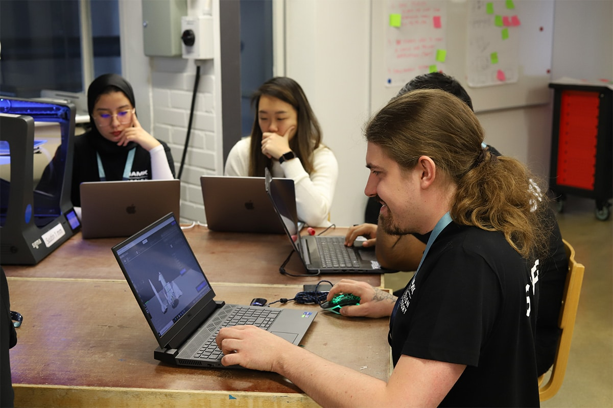

Hakijalle opiskelijoille Yrityksille Tutkimus hamk yhteystiedot
Sapit Vaihtomahdollisuudet opiskelijaedustajat
RUN -Eurooppa-yliopiston yhteinen opintotarjonta on avoinna kaikille HAMKin tutkinto-opiskelijoille. Opinnot koostuvat lyhyistä opintojaksoista, SAPeista (Short Advanced Programme), joita voit valita ja lisätä tutkintoosi omien kiinnostuksen kohteidesi mukaan. Kaikki SAPeista saadut opintopisteet sisällytetään tutkintoosi.
SAPit ovat monialaisia, kansainvälisiä opintojaksoja, joissa opiskellaan yhdessä muiden, eri puolilta Eurooppaa tulevien opiskelijoiden ja opettajien kanssa. Tarjontaa on laajasti eri aloilta, joten SAPit ovat hyvä tapa laajentaa HAMKin tutkintoasi. Jokaisesta SAPista saat todistuksen ja opintosuoritusotteen.
Opintojaksot ovat laajuudeltaan 1-6 opintopistettä, ja jokaiseen SAPiin kuuluu online-jakso sekä 1-2 viikkoa kestävä lähijakso joko meillä HAMKissa tai RUN-korkeakouluissa Irlannissa, Portugalissa, Hollannissa, Itävallassa tai Unkarissa.
Hae Mukaan!
Ajankohtaisen SAP-opintotarjonnan ja SAP-opintojen hakulomakkeet löydät RUN -Eurooppa-yliopiston verkkosivuilta. Tutustu SAP-valikoimaan tästä.
SAP-opintojaksojen lähiviikoille osallistumista varten on tarjolla apurahoitusta. Lue lisätietoja apurahoituksesta ja sen hakemisesta.